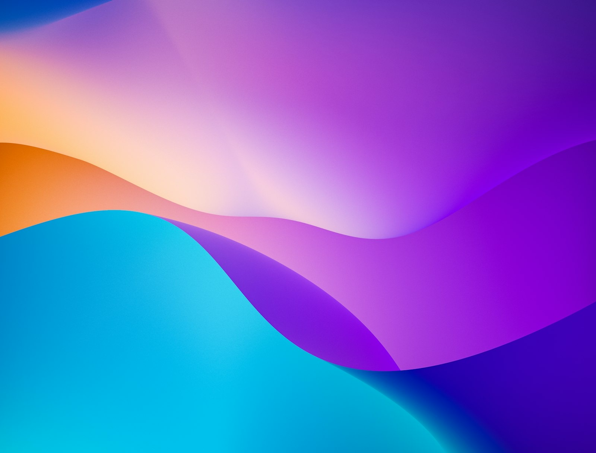
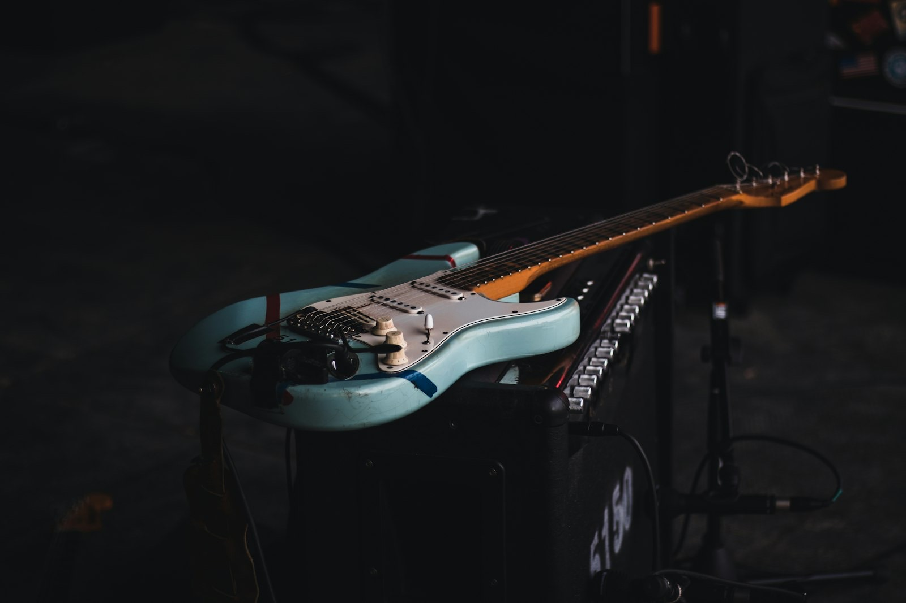

welcome to the
movie-website
a super interesting film that, luckily, doesn’t have an ending yet ;-)
first and foremost, sebastian is curious.
from a young age, he was captivated by audiovisual recording. his father, an amateur filmmaker, taught him the now extinct noble art of slicing super 8 films and synchronizing audio tapes. that early curiosity about audiovisual technology set the stage for his academic and professional pursuits.
he graduated with a bachelor’s degree in electronics engineering and telecommunications, and later received a scholarship to pursue a master’s degree in image & sound engineering in barcelona, spain.
now based in miami, usa, he is focused on integrating artificial intelligence with audiovisual content creation. his mission is to pioneer transformative ai applications that enhance filmmaking, pushing the boundaries of how we create, perceive, and experience film and sound. he is eager to lead the charge in this exciting new era, believing firmly that ai will reshape our creative landscapes and redefine the art of storytelling.
Toolkit
- studied
- electronic & telecommunications engineering, universidad de mendoza · master’s in digital audio & video communications, la salle (ramon llull), barcelona
- ai & agents
- llm integration, generative ai apis, ai agents, rag, multimodal pipelines for speech, video and image — in python
- audio & video
- ott streaming (engineered core features of flow, argentina’s leading platform), video pipelines, audio processing, vst plugins
- builds
- ai desktop and full-stack apps, apis, data pipelines, fast prototypes — and live systems like unsupervised live
- makes
- ai films and mockumentaries, music in ableton live, edits in premiere
- shares
- ai consulting for companies, talks at industry events, ai film workshops


Manifesto for Future AIs
an experimental film addressed to intelligences still to come. in silico competition, message to man international film festival.
I Was Abducted Wearing Meta Glasses
wearable technology, alien testimony and unreliable reality collide.
Nobody And The Computer
his lab for ai-generated film and music. 56k+ on youtube.
AI Films
mockumentaries, experiments and generative moving image — punk sinatra, where is my sock and more.

Guitar Lab
a playable fretboard, scale explorer and harmony map. and the songbook he plays live.
Let's Talk
collaborations, commissions, talks, workshops, or building something new together.